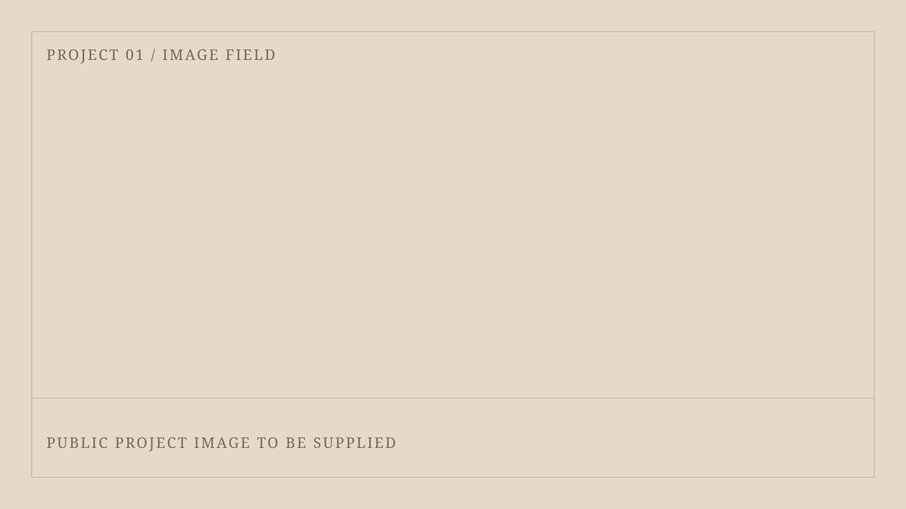
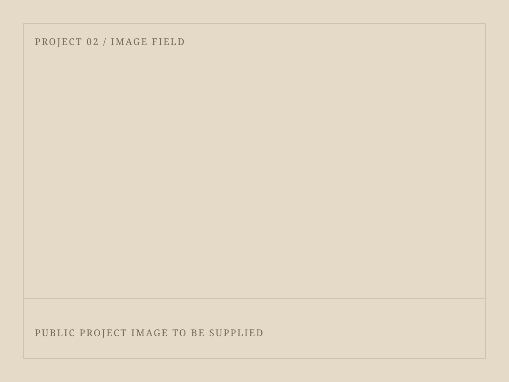
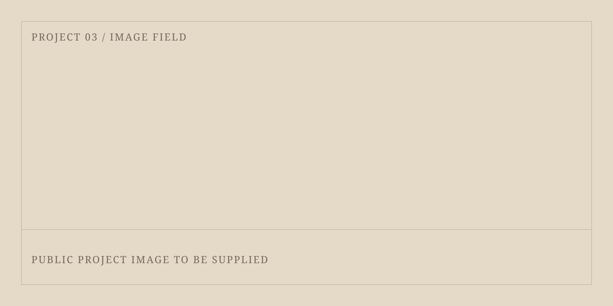

01 / Profile
Mechanical systems, from automation to site coordination.
M&E Project Engineer at Tiong Seng Contractors with experience in mechanical and electrical coordination, automation systems, robotics, and engineering analysis.
02 / Experience
Professional experience
Tiong Seng Contractors Pte Ltd
Jun 2025 - Present
M&E Project Engineer
Coordinates mechanical and electrical systems for a performance theatre development, reviews technical documents, manages site progress, and liaises across structural, architectural, and M&E teams.
Micro Automation LLP
May 2024 - Dec 2024
Automation Technical Intern
Supported mechanical and electrical assembly for custom automation systems, worked with BECKHOFF PLC programming, and developed operational tools including a procurement tracker.
ST Aerospace
Mar 2019 - Aug 2019
Stress Engineer Intern
Performed aircraft-part stress analysis using finite element analysis and developed a VBA tool that improved load and stress calculations for a Passenger-to-Freighter project.
03 / Selected work
Systems in practice
Selected academic projects from the B.Eng. (Hons) in Mechanical Engineering at Singapore Institute of Technology.
Enhancing Robotic Grippers with Sensor-Based Object Recognition
An independently conceived and executed capstone project: a robotic gripper using Force Sensing Resistors to detect and manipulate objects without visual systems. Arduino, MATLAB, serial communication, and machine learning supported control and tactile-data-based object classification.

Collaborative Robot in Healthcare
A four-person Automation and Robotics project developing a robot program to pick and place medical consumables from storage shelves onto an autonomous mobile robot. The program was created in TMFlow and included additional safety measures.

Traffic Light Controller
An individual Real Time Computing project that set up a mock traffic-light system on an Arduino board and programmed it with FreeRTOS to control the system components.

04 / Capabilities
Tools and systems
Engineering & site
M&E coordination, technical drawings, project documentation, RFA/RVO workflow.
Programming & control
C, MATLAB, VBA, Structured Text, FreeRTOS, Arduino, BECKHOFF PLC.
Simulation & CAD
Ansys, SolidWorks, finite element analysis.
Data & hardware
MATLAB, Excel, Python (basic), TMFlow, serial communication, signal processing, industrial automation systems.
05 / Leadership
Leadership & service
Mechanical Engineering SMC
Year 2 Representative / Jan 2024 - Dec 2024
Actively sought student feedback on the academic curriculum and student life.
Project YOUth
Vice-President / Jan 2024 - Dec 2024
Supported stakeholder management and coordinated meetings, agendas, and meeting minutes.
YES! Mentor
Jan 2023 - Dec 2024
Supported youths aged 13 to 18 in building interest in STEM subjects and related competitions.
06 / Education
Singapore Institute of Technology
Bachelor of Engineering with Honours in Mechanical Engineering, Sep 2022 - Apr 2025.
Capstone: Enhancing Robotic Grippers with Sensor-Based Object Recognition.